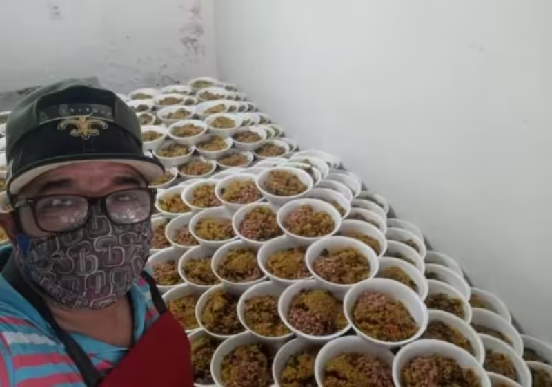
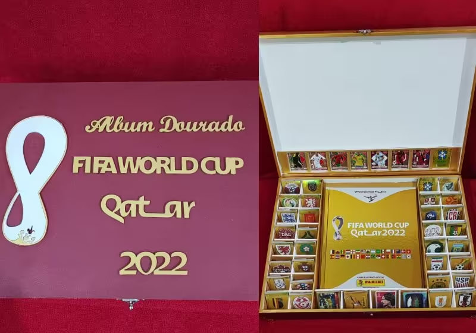
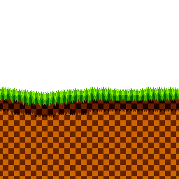
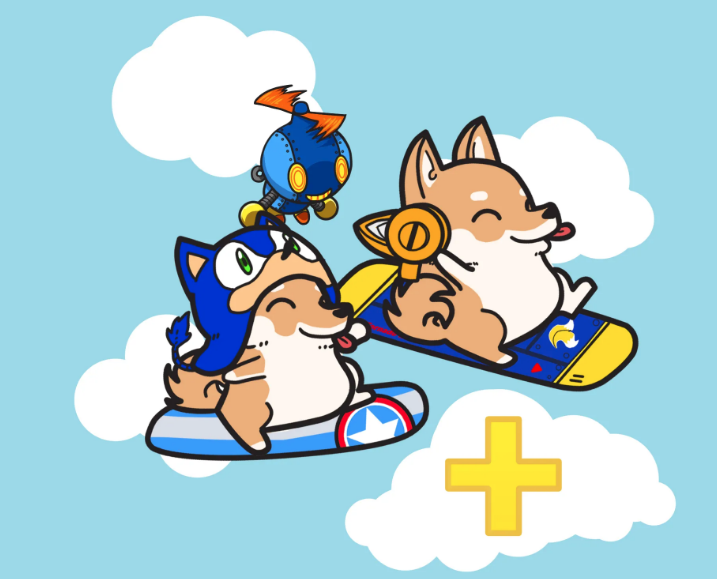

Seja Bem-Vindo !
Ao longo do ano, acontecem muitas coisas, porém acabamos lembrando somente das ruins e esquecendo de dar espaço pras boas. Nesse site, queremos dar esse destaque para coisas boas que aconteceram esse ano e torcer para que muito mais aconteçam no ano seguinte!
Tio Marmita mata a fome de 400 pessoas carentes por dia no DF
Tio Marmita é o apelido de um homem que trabalha diariamente para levar um pouco conforto e dignidade a pessoas carentes no Distrito Federal .
A missão que o Adenilson Cruz, de 44 anos, abraçou há quase 10 anos é levar refeições para gente que vive em situação de vulnerabilidade na região. Para ele, “o propósito de doar marmitas é salvar vidas”.
Adenilson é ex-consultor. Ele diz que o trabalho é feito com muito esforço e dedicação. E conta que a recompensa que recebe é um sorriso de volta de quem é ajudado. “A forma mais honesta que eu encontrei de ajudar alguém foi por meio da comida, porque não tem desperdício”, afirmou.

Fonte: https://www.sonoticiaboa.com.br/2022/11/02/tio-marmita-mata-fome-400-pessoas-carentes-df
Palhaço rifa álbum dourado da Copa para comprar brinquedos para crianças carentes no Natal
Todo ano o Palhaço Psiu se esforça para comprar brinquedos novos para crianças carentes no Natal, mas conseguiu poucos até agora e decidiu fazer uma rifa diferente para ajudar a impulsionar a arrecadação.
Psiu está rifando um álbum dourado e completo, inclusive com figurinhas raras da Copa do Mundo do Qatar. E com um número da rifa você ajuda a fazer duas crianças sorrirem neste fim de ano!
“Tive a ideia de completar um álbum da copa do mundo dourado, numerado, com todas as figurinhas e algumas lendárias e rifar. O dinheiro arrecadado será para a compra de presentes para a campanha […] A cada rifa comprada vocês estão ajudando duas crianças a ganhar um brinquedo novo”, contou Psiu em entrevista.

Fonte: https://www.sonoticiaboa.com.br/2022/11/27/palhaco-rifa-album-copa-comprar-brinquedos-criancas-natal
O YouTuber Rezende, que adora surpreender os fãs, desta vez comprou um petshop inteiro para salvar cães da fome e levar um pouco mais de alegria até uma associação de animais em Londrina, no Paraná.
O influenciador surpreendeu a ADA – Associação Defensora dos Animais de Londrina – com um caminhão repleto de pacotes de ração, brinquedos, petiscos e até produtos de higiene!
Apesar de não ser o foco do canal dele, não é a primeira vez que Rezende realiza ações deste tipo. Ele já declarou que é só um pouquinho, em troca de tanto carinho e reconhecimento que ele ganha dos internautas.
YouTuber Rezende compra petshop inteiro para alimentar cães sem dono
Fonte: https://www.sonoticiaboa.com.br/2022/11/10/youtuber-rezende-compra-petshop-inteiro-alimentar-caes-sem-dono


Espero que tenha gostado de
ver o que há de bom em nosso
ano!
Até ano que vem :D